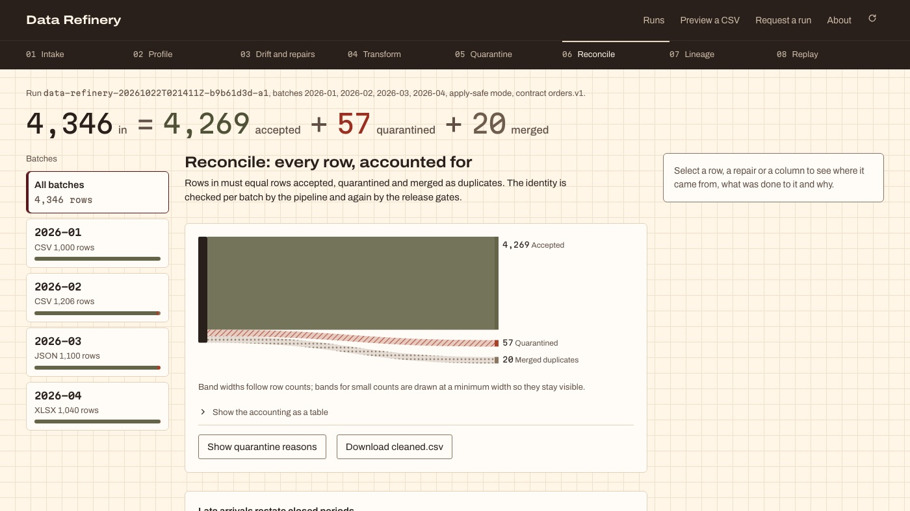

Python · Data engineering · 2026-10
Data Refinery
A self-repairing pipeline workbench for synthetic order batches: a data contract, drift repairs with evidence, quarantine with reasons, and a proof that every input row is accounted for.

- Problem
- Pipelines break quietly. A supplier renames a column, switches a date format or starts sending prices in cents, and the dashboard downstream keeps updating with wrong numbers. The question…
- Role
- Built and written by Rishit Raj Mathur; the case study names its sources and checks.
- Tools
- Python, Data contracts, Schema drift detection, CSV / JSON / XLSX, GitHub Actions, React, Vite, TypeScript
- Status
- Case study with a live demo; last push 2026-10-22
- Evidence
- Browse the workbench · Code on GitHub

- Repository
- github.com/mrrishit909/data-refinery
- Commits
- 15
- Last push
- 2026-10-22
- Created
- 2026-10-22
- Languages
- Python 62%, TypeScript 32%, CSS 5%
Every dataset is synthetic and committed, with the defects injected on purpose and a ground truth to check against. No real customer or company data is involved.
01The problem
Pipelines break quietly. A supplier renames a column, switches a date format or starts sending prices in cents, and the dashboard downstream keeps updating with wrong numbers. The question here is whether a pipeline can notice drift, repair only what is unambiguous, say exactly why it refused the rest, and prove that no row was silently dropped: rows in = accepted + quarantined + merged duplicates.
02What I built
A Python pipeline engine, a GitHub-native run harness and a static workbench site:
- A fixture generator that writes synthetic e-commerce order batches in CSV, JSON and XLSX with documented, injected defects and the ground truth beside them.
- A data contract (
orders.v1) and a fixed synthetic FX table. - Eight pipeline stations: intake and fingerprinting, profiling, drift detection, repair proposals with evidence and confidence, transformation, quarantine, deduplication, and reconciliation with lineage and quality scores.
- A GitHub-native harness: run requests arrive as issues, results are published to a
statebranch, and an outcome loop keeps memory across runs. - An embeddable workbench with an in-browser CSV preview against the contract; nothing is uploaded or saved.
03How it was built
- 01
Build fixtures with known defects
python -m datarefinery fixturesgenerates order batches and plants specific problems in them: renamed columns, mixed date formats, prices in the wrong unit, category spelling variants, duplicate rows. Because the defects are documented, every later stage can be checked against what was actually injected. - 02
Fingerprint, profile and compare to the contract
Each batch is fingerprinted and profiled (types, ranges, null rates, distinct values) and then checked against the
orders.v1contract. Differences become drift findings rather than crashes. - 03
Propose repairs, apply only the unambiguous ones
For each drift finding the engine proposes a repair with the evidence behind it and a confidence. Renames, date formats, unit scale and clear category variants can be applied automatically. Category rules are lexical only, and a one-letter substitution is never auto-applied, because the pipeline must not guess business meaning.
- 04
Quarantine with reasons, merge duplicates
Rows that still fail the contract go to quarantine with a stated reason. Duplicates within a run are merged and counted. Nothing is deleted without a record of why.
- 05
Reconcile every row
The reconciliation station proves the accounting equation for each run, and lineage records which repairs touched which rows. The workbench shows the equation first, then the eight stations, the quarantine, repair evidence, lineage and downloads.
rows in = accepted + quarantined + merged duplicates - 06
Bound the intake and run through GitHub
A run is requested with the Pipeline run request issue form; the owner's run automatically, others wait for a
job:approvedlabel. Intake is bounded to four batches, 5,000 rows and 2 MB per file and one XLSX sheet, and a request whose outputs would exceed 1.9 MB is rejected before anything is written.
04Results
The README states the pipeline's guarantees and bounds rather than a scoreboard:
- Accounting equation enforced on every run:
rows in = accepted + quarantined + merged duplicates. - Formats: CSV, JSON and XLSX intake; one contract (
orders.v1) and one fixed synthetic FX table. - Bounds: 4 batches, 5,000 rows and 2 MB per file, one XLSX sheet, 1.9 MB output ceiling.
- Repairs covered: renames, date formats, unit scale and unambiguous category variants; business meaning is never guessed.
No accuracy percentages are published in the README, so none are claimed here. Each run's record on the state branch carries its own counts.
05What I'd do next
- Detect a minority of rows in another unit inside an otherwise consistent batch (unit detection is per batch today).
- Deduplicate across runs, not only within one.
- Add a second contract and let the optional AI grader run once an inference secret is configured, recording in each release whether it ran.